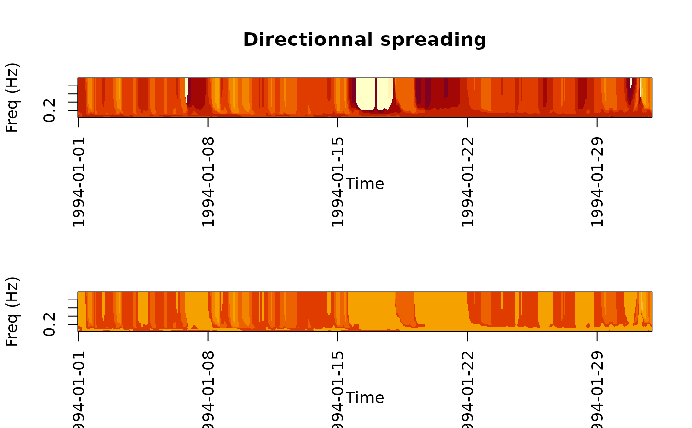
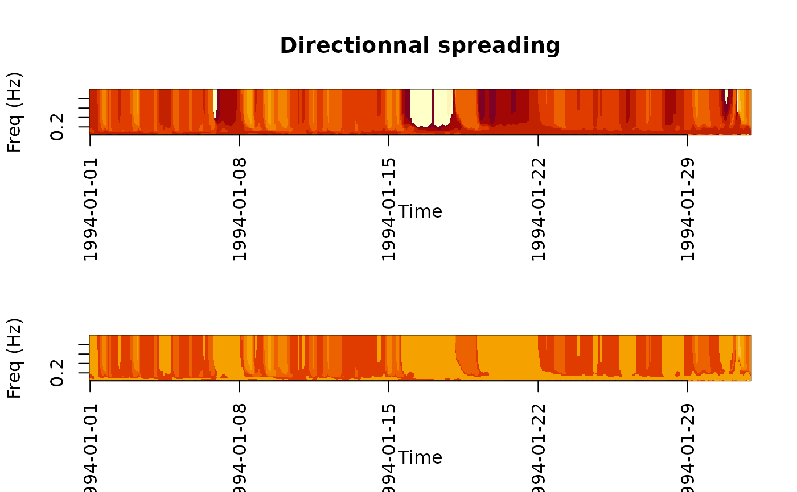

Converts a 2D spectrum time series to a 1D spectrum
Source:R/specta_data_processing.R
convert_spectrum_2D1D.RdConverts a 2D spectrum time series to a 1D spectrum
Examples
# Ensure that data package is available before running the example.
# If it is not, see the `resourcecode` package vignette for details
# on installing the required data package.
if (requireNamespace("resourcecodedata", quietly = TRUE)) {
spec <- resourcecodedata::rscd_2d_spectra
spec1D_RSCD <- resourcecodedata::rscd_1d_spectra
spec1D <- convert_spectrum_2d1d(spec)
# Check the differences, should be low
max(abs(spec1D_RSCD$ef - spec1D$ef))
# Plot the different spectrum
plot(spec1D$freq, spec1D$ef[, 1], type = "l", log = "xy")
lines(spec1D_RSCD$freq, spec1D_RSCD$ef[, 1], col = "red")
# Images
lims <- c(0, 360)
r <- as.POSIXct(round(range(spec1D$forcings$time), "hours"))
oldpar <- par(mfcol = c(2, 1))
image(spec1D$forcings$time, spec1D$freq, t(spec1D$th1m),
zlim = lims,
xlab = "Time",
ylab = "Freq (Hz)",
xaxt = "n",
main = "Directionnal spreading"
)
axis.POSIXct(1, spec1D$forcings$time,
at = seq(r[1], r[2], by = "week"),
format = "%Y-%m-%d",
las = 2
)
image(spec1D_RSCD$forcings$time, spec1D_RSCD$freq, t(spec1D_RSCD$th1m),
zlim = lims,
xlab = "Time",
ylab = "Freq (Hz)",
xaxt = "n"
)
axis.POSIXct(1, spec1D$forcings$time,
at = seq(r[1], r[2], by = "week"),
format = "%Y-%m-%d",
las = 2
)
par(oldpar)
}
 
